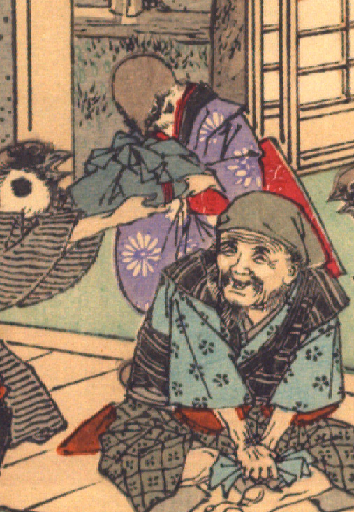

雀。紫色の着物に赤い帯をまとっている。袂が長めなので、娘と思われる。袖から出ている腕は人間のものである。画面左にいる雀から青い風呂敷包を受け取っている。
出典：親書誌：U426_nichibunken_0109：Le moineau qui a la langue coupée／日付：2006／資源識別子：U426_nichibunken_0109_0003_0003
Copyright (c)2010- International Research Center for Japanese Studies, Kyoto, Japan. All rights reserved.